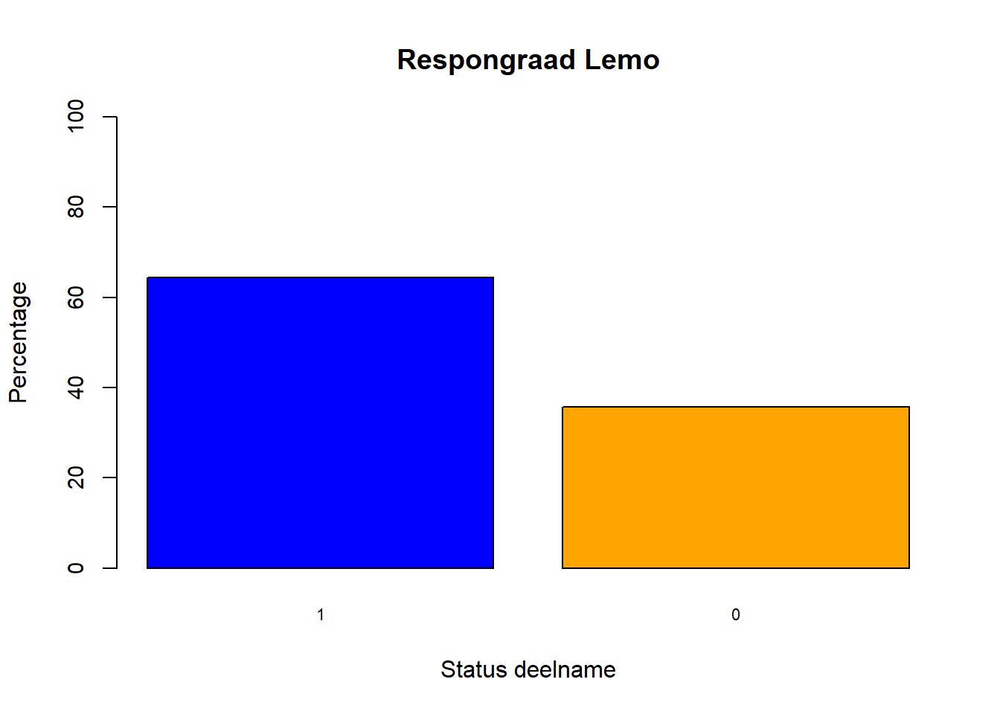
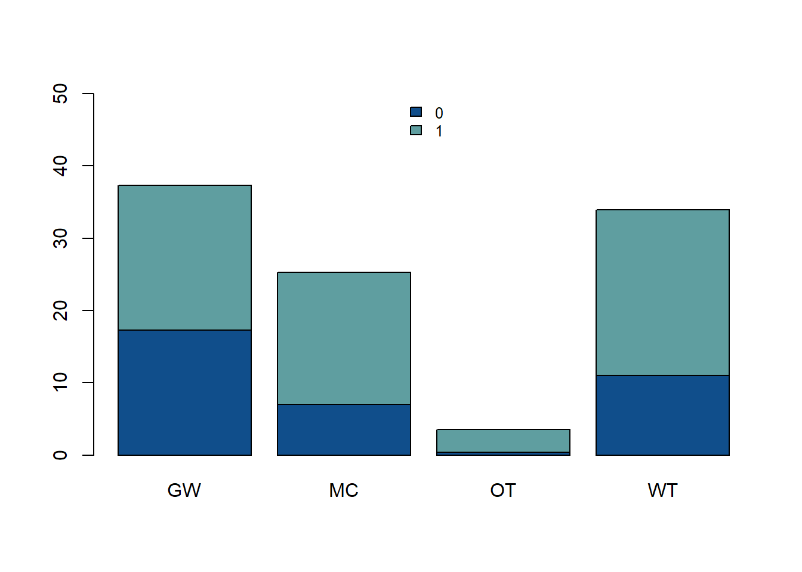
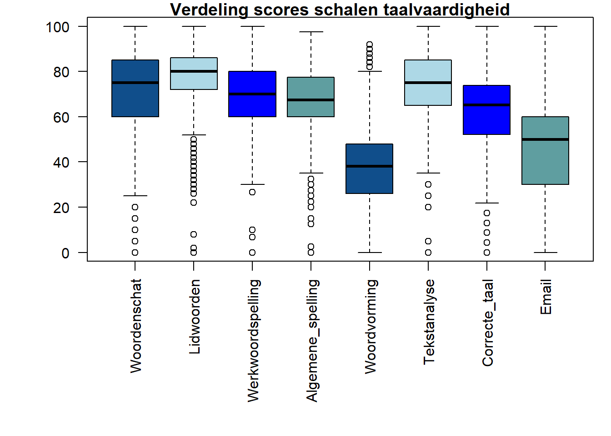
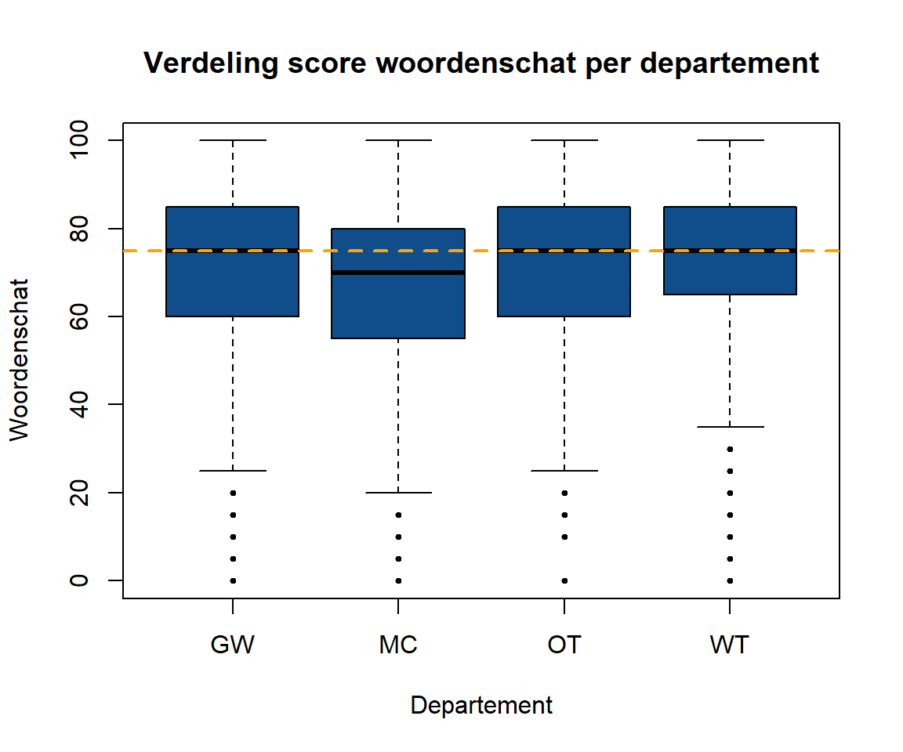
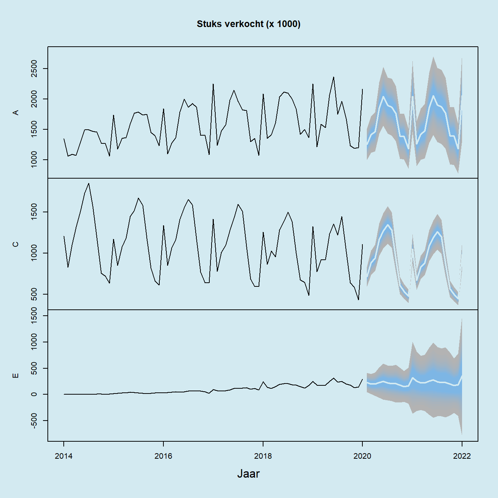
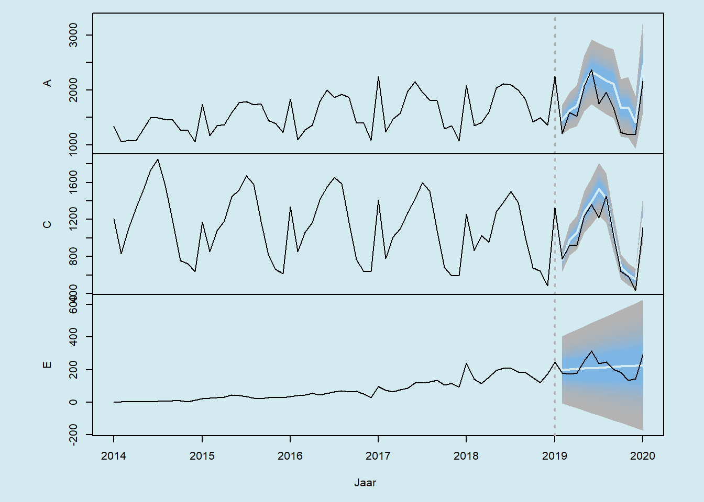
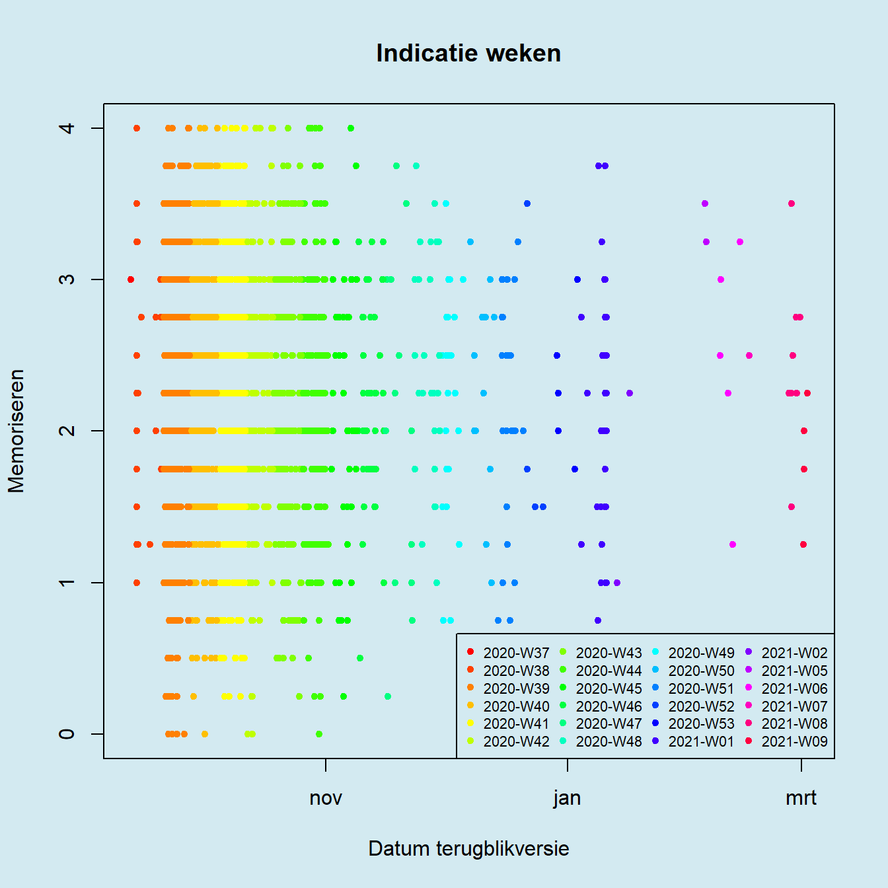

Workshop 2 Tijdreeksen
2.1 Inleiding
In deze workshop krijg je te zien hoe je temporele data grafisch kunt voorstellen. We zullen zien dat het weergeven van zulke gegevens nauw verweven is met de verwerking ervan. Omdat meeste analyse tools hier ook gebruik van maken zullen we onze gegevens omzetten naar een object van de klasse ts (time series). We gaan ook zien hoe je een voorspelling op tijdreeksen best in grafiek zet.
2.2 Start
2.3 Nieuw project
Je kan ook zonder, maar het is beter om een project-folder te definiëren. Helemaal rechtsboven in RStudio, onder het kruisje om de applicatie te sluiten, vind je een keuzelijst met daarin de mogelijkheid om een nieuw project te creëren.
- Volg de wizard en maak een project aan in een folder naar keuze
Het is wel best om voor deze workshop lokaal te werken.
2.4 Nieuw rapport
We werken standaard met het principe van elektronische notitieboeken (eng: notebooks). We doen dit om de reproduceerbaarheid te verhogen maar ook gewoon omdat het plezieriger werkt. Het formaat daarvoor is een RMarkdown bestand (extensie `.rmd``). Ga als volgt te werk:
- Maak een nieuw notitieboek aan via de eerste knop linksboven in de knoppenbalk: New File > R Markdown
- Geef een titel op voor het HTML document. HTML is de standaard keuze maar je merkt dat er veel meer keuze bestaat
- Het kan zijn dat RStudio de eerste keer vraagt om een aantal pakketten te downloaden. Antwoord dan ‘ja’ en laat de installatie rustig voltooien
- Je merkt dat RStudio een voorbeeld bestandje heeft aangemaakt
- Druk nu op de Save-knop of gebruik de sneltoets
Ctrl + Som het bestand in de project-folder te bewaren (gebruik de sneltoetsAlt + Shift + Kvoor een overzicht van andere sneltoetsen) - Het bestand gaan we meteen eens uitvoeren of ‘knitten’ door op de knit-knop te drukken of de sneltoets
Ctrl + Shift Kte gebruiken
Als alles goed gaat, wordt er een voorbeeld-rapportje gegenereerd en in de viewer-pane getoond.
2.5 Data opladen
Op het einde van de workshop krijg je de kans om met dezelfde dataset als voor de Boxplot-workshop te werken, maar omdat die gegevens zich iets moeilijker lenen voor tijdreeksanalyse, gaan we eerst met een eenvoudigere dataset van start.
Op Kaggle vind je de dataset genaamd
Time Series Data. De data wordt oorspronkelijk als een Excel werkboek beschikbaar wordt gemaakt, maar hier werd dit bestand op voorhand reeds omgezet naar een tsv-bestand. Het bestaat uit de verkoopcijfers van een aantal producten samen met nog een heleboel andere gegevens waar we hier geen gebruik van zullen maken.
Excel is vaak erg problematisch als databron, dus als je het kan vermijden, gebruik dan het liefst een formaat dat binnen 2000 jaren nog steeds begrepen gaat worden: platte tekst, liefst tab-gescheiden (
.tsv, tab-separated values) zodat inhoudelijke komma’s niet ge-escaped moeten worden met dubbele aanhalingstekens.
Voor het opladen van de data gebruiken we data.table. Dat is op dit ogenblik de meest professionele manier om data te manipuleren. De fread methode is flexibel en laat toe om:
- zeer snel en zeer grote datasets op te laden
- tekst rechtstreeks als data te parseren (i.e.
fread("A,B\n1,2\n3,4")) - te bepalen welke variabelen en instanties te selecteren
- een shell commando uit te voeren voor de voorbewerking
- te bepalen als welke data type de variabelen geïnterpreteerd moeten worden
- de tekencodering van een bestand mee te geven (i.e.
UTF-8) - de primaire sleutel te definiëren in geval van relationele data
- een archiefbestand mee te openen (i.e.
fread("dev.gz"))
- In je nieuw Rmd bestand, verwijder je de voorbeeld code en plaats je onderstaande code:
---
title: "Timeseries"
author: "Jouw naam hier"
date: "Gepubliceerd op 2021-03-15"
output:
html_document:
highlight: zenburn
---
## Workshop tijdreeksen
...- Geef in jouw naam in en vervang
...met een nieuwe R codeblok (eng: code chunk) door de drie punjes te selecteren en de sneltoetsCtrl + Alt + Iin te geven - Zorg ervoor dat er voor én na elke codeblok, titel en opsomming een lege lijn wordt toegevoegd
- Plaats onderstaande code in deze eerste blok (bijkomdende uitleg volgt hieronder):
library(knitr)
library(data.table)
library(magrittr)
library(readxl)
library(dplyr)
library(ISOweek)
library(lubridate)
library(forecast)
opts_chunk$set(echo = TRUE)
sales <- fread(, "dat/sales.tsv")Met de verscheidene library uitdrukkingen worden de nodige pakketten in het geheugen geladen. Als deze lijnen een fout genereren, heeft dat er meestal te maken dat het pakket nog niet geïnstalleerd is. Gebruik dan een uitdrukking zoals install.packages(c("data.atble", "magrittr")) in de console om de pakketten te installeren. Hieronder overlopen we kort de reden waarom we deze pakketten laden:
knitr: parseren van de RMarkdown naar een HTML rapportjedata.table: laden en manipuleren van datamagrittr: gebruik van method chainingdplyr: alternatief voor het manipuleren van dataISOweek: omzetten van datum naar weeknummers en omgekeerd en dit volgens ISO 8601 normeringlubridate: uitdrukken van een datum als decimaal getalforecast: wrapper om voorspellingen uitvoeren optsobjecten
Merk op dat hier twee alternatieven worden gebruikt voor het manipuleren van data. Merk ook op dat er veel energie wordt gestoken in het manipuleren van datum velden. Zoals we zullen zien is dat niet voor niets. Het afhandelen van datums, zeker indien de gegevens op weekbasis worden ingedeeld, kan een zeer complexe karwij worden.
Met de opts_chunk$set functie (eigenlijk functie set als element in de list opts_chunk) zorgen we ervoor dat de code mee getoond wordt in het rapport. Wordt het rapport verspreidt naar individuen die aan de code geen boodschap hebben, dan kan je echo = FALSE instellen.
2.6 Kleuren
- Maak een kleurenpalet aan:
palette(c(rgb(.7, .7, .7), "steelblue1", "black", "#D3EAF1"))De lijn hierboven demonstreert het gebruik van een kleurenpalet. Hier zie je dat je kleuren in verschillende formaten kunt ingeven. Nadat het palet gedefinieerd is, kan je naar de kleuren verwijzen d.m.v. 1, 2, …. Misschien is hier een goede plaats om een zijsprongetje te maken naar de kleurenruimte van Munsell.
Munsell was een genie met kleuren. Een volledige beschrijving van zijn kleurenruimte valt buiten deze workshop, maar het volstaat hier om één van zijn zogenaamde kleurtegenstellingen (dyaden) te bewonderen om waarde ervan in te zien:
Figuur 2.1: De dyade blauw-5 tegenover geelrood-5 (5B-5YR). In elke gekleurd vak zie je van boven naar onder een index voor referentie, de Munsell kleurcode, de overeenkomende RGB waarden en ten slotte de kleur voorgesteld als hex triplet. Zie de Wikipedia pagina voor meer info en deze pagina van de Rochester Institute of Technology waar je datasets vindt om gelijkaardige figuren te produceren.
2.7 Data exploratie
We gaan de data exploratie hier tot een minimum beperken.
- Met de
strfunctie kijk je naar de inhoud van hetsales object. Zulk een functie wordt typisch in de console uitgevoerd en maakt dan geen onderdeel uit van het rapport zelf:
sales %>% str## Classes 'data.table' and 'data.frame': 935 obs. of 86 variables:
## $ Key : chr "A" "B" "C" "D" ...
## $ Date : POSIXct, format: "2014-01-01" "2014-01-01" ...
## $ Volume : num 1346974 677826 1210359 436761 434 ...
## $ Disc : num 4.29e+08 1.16e+08 1.04e+08 5.63e+07 2.94e+05 ...
## $ max_T : num 49.5 49.5 49.5 49.5 49.5 ...
## $ min_T : num 29.7 29.7 29.7 29.7 29.7 ...
## $ avg_T : num 39.6 39.6 39.6 39.6 39.6 ...
## $ precipitation : num 0.448 0.448 0.448 0.448 0.448 ...
## $ Consumer_Price_Index_month : num 85.5 85.5 85.5 85.5 85.5 ...
## $ Exchange_Rate_Index_Period_Average_month : num 109 109 109 109 109 ...
## $ Exchange_Rate_LCU_per_US_Period_Average_month : num 6.83 6.83 6.83 6.83 6.83 ...
...We zien dat er een aantal producten zijn (onder Key), een datum van verkoop (Date) en dat de verkoopcijfers onder Volume staan. Zoals je kan zien zijn er veel meer variabelen, maar met deze drie zouden we toch al aan de slag moeten kunnen om het principe te demonstreren.
2.8 Data voorbereiden
Het bijzondere aan tijdreeksen (maar ook bijvoorbeeld GIS data) is dat de afhankelijke variabelen niet enkel van andere variabelen afhangt, maar ook van zichzelf. Men spreekt van autocorrelatie wanneer een waarde van een naburige waarde (in ruimte of tijd) afhangt.
- In R werk je bij tijdreeksen het best met
ts-klasse objecten (staat voor time series). Daarvoor moeten we eerst de data pivoteren:
sales <- sales %>%
dcast(Date ~ Key, value.var = "Volume")| Date | A | B | C | D | E | F | G | H | I | J | K | L | M | N |
|---|---|---|---|---|---|---|---|---|---|---|---|---|---|---|
| 2014-01-01 | 1346974 | 677825.9 | 1210358.5 | 436760.7 | 433.99 | 1229415.4 | 790802.1 | NA | NA | NA | NA | NA | NA | NA |
| 2014-02-01 | 1058681 | 442605.0 | 829241.9 | 205538.3 | 699.10 | 885082.1 | 507910.2 | NA | NA | NA | NA | NA | NA | NA |
| 2014-03-01 | 1089615 | 550634.4 | 1100553.1 | 262253.8 | 1421.69 | 1191730.8 | 612966.6 | NA | NA | NA | NA | NA | NA | NA |
| 2014-04-01 | 1073261 | 665210.9 | 1316461.4 | 351818.4 | 1758.77 | 1357049.5 | 879226.3 | 278106.2 | NA | NA | NA | NA | NA | NA |
| 2014-05-01 | 1289022 | 811401.7 | 1515828.5 | 309505.0 | 2275.23 | 1713073.1 | 1041092.3 | 389241.8 | NA | NA | NA | NA | NA | NA |
| 2014-06-01 | 1491953 | 915308.1 | 1731305.7 | 339498.8 | 2894.75 | 1887919.4 | 1292278.0 | 501514.3 | NA | NA | NA | NA | NA | NA |
Dit formaat is eerder uitzonderlijk in statistische analyses en komt men voornamelijk tegen bij gegevens met autocorrelatie (zie ook de term repeated measures).
- Nu selecteren we drie producten en selecteren ze ook op
Dateom dat er een aantal waarden op het einde van de tijdsreeks ontbreken. Daarna converteren we de data naar eentsobject:
sales_ts <- sales[
Date < "2020-02-01", # Selectie op datum
.(A, C, E)] %>% # Selectie van Variabelen
ts(frequency = 12, # Omzetten ts, 12 maanden per jaar
start = c(2014, 1)) # Startdatum opgeven2.9 In grafiek zetten van tijdreeksen
- Vanaf dat alles in het juiste formaat staat is het zo eenvoudig als de plot functie op te roepen:
par(bg = 4, cex.main = 1)
main <- "Verkoopcijfers (volume)\nvoor drie producten"
sales_ts %>% plot(main = main, xlab = "Jaartal")
Bijna perfect. Er is nog één probleempje met de y-assen. De positie van de labels op assen in base R wordt bepaald door een functie pretty. Je zou dus de y-assen in de plot kunnen uitschakelen (yaxt = "n") en deze helemaal manueel uittekenen door gebruik te maken van de functie axis, maar het is natuurlijk veel eenvoudiger om de aantallen te delen door een factor 1000.
- Pas de voorgaande code aan om de verkoopcijfers eerst te delen door 1000 en pas ook de titel van de figuur aan:
sales_ts_th <- sales_ts / 1000
par(bg = 4, cex.main = 1)
main <- "Verkoopcijfers (volume x 1000)\nvoor drie producten"
sales_ts_th %>% plot(main = main, xlab = "Jaartal")
2.10 Tijdreeks analyses
Dit is geen workshop rond analyses, maar in werkelijkheid gaan de analyses en de visualisatie hand-in-hand. Visualisatie is immers vaak ook het in beeld brengen van diagnostieken. Voor tijdreeksen zijn er bijzondere statistieken die de autocorrelatie (binnen eenzelfde variabele) en cross-correlatie (tussen verschillende variabelen) mooi kunnen visualiseren. Hier komt past echt de voordelen van ts naar boven.
- Onderzoek de auto- en cross-correlatie voor alle combinaties van de verkoopvolumes voor de producten A, c en E. Doe dit voor een horizon van 18 maanden in de toekomst (positief) en in het verleden (negatief):
par(bg = 4)
sales_ts_th %>% acf(lag.max = 18)
Hieruit leren we bijv. dat er een correlatie is tussen producten A en E met een horizon van 1 ‘seizoen’ (1 jaar in dit geval), maar dat de relatie niet volledig symmetrisch is, dus het ene geeft mogelijk aanleiding tot het andere en niet omgekeerd. Om dit te zien vergelijk je de correlatie op 1.0 voor A & E (onder significantie niveau) met die van -1.0 voor E & A (boven significantie niveau).
2.11 Ontbinden in factoren
- Laten we de verkoopcijfers voor één product, namelijk product C ontbinden in een seizoenseffect (het zuiver repetitief gedeelte), de trend (achtergrond niveau) en de overblijvende ruis:
par(bg = 4)
sales_ts_th[, "C"] %>% stl(s.window = "periodic") %>% plot
Merk op dat het probleem van de assen hier wordt opgelost door de positie van de y-as te laten alterneren.
- Onderzoek hoe de plot van een
stlobject ervoor zorgt dat de assen alternerend getoond worden:
stats:::plot.stl## function (x, labels = colnames(X), set.pars = list(mar = c(0,
## 6, 0, 6), oma = c(6, 0, 4, 0), tck = -0.01, mfrow = c(nplot,
## 1)), main = NULL, range.bars = TRUE, ..., col.range = "light gray")
## {
## sers <- x$time.series
## ncomp <- ncol(sers)
## data <- drop(sers %*% rep(1, ncomp))
## X <- cbind(data, sers)
## colnames(X) <- c("data", colnames(sers))
## nplot <- ncomp + 1
...2.12 Voorspellingen
Laten we toekomst voorspellen, meer bepaald de verkoopcijfers voor het jaar 2019. Merk op dat we die cijfers gewoon hebben, waarom zouden we ze dan voorspellen? Omdat het natuurlijk goed is om meteen de voorspelling te toetsen aan de realiteit, anders moeten we een jaar wachten en dat zagen de organisatoren van deze workshop niet zitten ☺.
- Laten we de standaard plot voor
forecastobjecten met meerdere variabelen:
par(bg = 4)
sales_ts_th %>% forecast %>%
plot(col = 3, xlab = "Jaar",
main = "Stuks verkocht (x 1000)")
Dit is al vrij goed maar er zijn een aantal problemen. Laten we met een belangrijk detail beginnen: de kleur en de schakeringen van de predictie-intervallen.
- Met
fankan je meer kleurschakeringen bekomen en metcolorRampPalettemaken we een eenvoudige kleurschakering:
par(bg = 4)
ramp <- colorRampPalette(1:2)(25)
sales_ts_th %>%
forecast(fan = TRUE) %>%
plot(col = 3, xlab = "Jaar", shadecols = ramp,
main = "Stuks verkocht (x 1000)")
Nu komt het belangrijkste probleem: we willen eigenlijk enkel 2019 voorspellen en we willen de actuele en voorspelde data naast elkaar zien. Het zou ook leuke zijn mocht er een duidelijke markering komen bij de start van de voorspelling.
- Probeer de voorspellingen te reproduceren met hierboven genoemde vereisten:
par(bg = 4, mfrow = c(3, 1), oma = c(5, 3, 1, 1),
mar = c(0, 4, 0, 2))
for(series_name in sales_ts %>% colnames) {
series <- sales_ts_th[, series_name]
fc <- series %>%
window(end=c(2019, 1)) %>%
forecast(fan = TRUE, h = 12)
fc %>% plot(shadecols = ramp, col = 3,
xaxt = "n", main = "")
title(ylab = series_name)
if (series_name == "E") {
axis(1)
}
abline(v = 2019, lwd = 2, col = 1, lty = 3)
fc <- series %>%
window(start=c(2018, 12)) %>% lines(col = 3)
}
title(xlab = "Jaar", outer = 2)
2.13 Extra: Herbemonsteren van temporele gegevens
Temporele gegevens zijn vaak georganiseerd op week, maand, kwartaal of jaarbasis. Bijvoorbeeld verkoopcijfers per kwartaal. In het vakjargon spreekt met van een bucket van bijvoorbeeld een week, een kwartaal, enz…. Soms echter, zoals bij onze data, is er wel een datum veld voorzien, maar zijn de data niet netjes geaggregeerd naar zulke vaste tijdseenheid. De aggregatie, die men ook wel resampling of bucketising noemt, moeten we dan nog manueel uitvoeren. Hieronder wordt dit voor de volledigheid gedemonstreerd. We vertrekken van de studenten resultaten data uit Workshop 1:
sem_1_anon <- fread("dat/sem_1_anon.tsv")We controleren eerst het bereik van de variabele Datum1, verdelen het al eens in weken en tellen we zeven dagen bij de einddatum:
sem_1_anon$Datum1 %>%
range(na.rm = TRUE) %>%
strftime("%Y-W%V-1") %>%
ISOweek2date %>%
add(c(0, 7))## [1] "2020-09-07" "2021-03-08"Door per week in te kleuren zien we waar er voldoende data aanwezig is om een analyse op uit te voeren:
sem_1_anon[, Week_T := factor(ISOweek(Datum1))]
week_lev_all <- sem_1_anon$Week_T %>% levels
par(bg = 4)
ramp <- rainbow(24, 1)
temp_pal <- palette(ramp)
sem_1_anon[, plot(Datum1, MemoS_T, col = Week_T,
pch = 19, cex = .7,
main = "Indicatie weken",
xlab = "Datum terugblikversie",
ylab = "Memoriseren")] -> d
legend("bottomright", legend = week_lev_all, col = ramp,
cex = .7, bg = NA, ncol = 4, pch = 19, border = "n")
palette(temp_pal)Nu kunnen we eindelijk een selectie maken + de omzetteing naar ts verzorgen.
par(bg = 4)
sem_1_anon[
grepl("2020", Week_T), # Selectie
.(MemoS_T = mean(MemoS_T)), # Var-manipulatie
Week_T] %>% # Groepering
arrange(Week_T) %>% # dplyr
select(MemoS_T) %>%
ts(
freq = 365.25/7,
start = decimal_date(ymd("2020-09-07"))) %>%
plot(lwd = 2, xlab = "Tijd (decimaal)",
ylab = "Memoriseren", main = "Evolutie memoriseren")